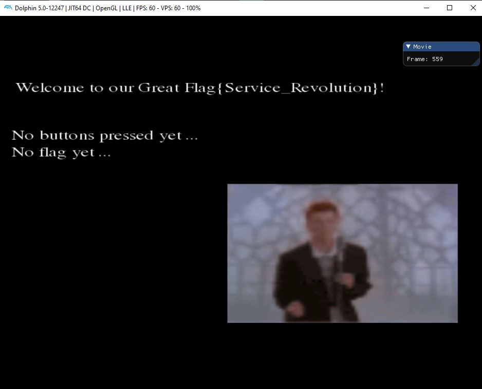
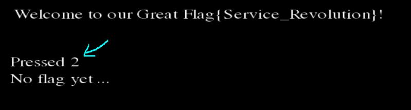
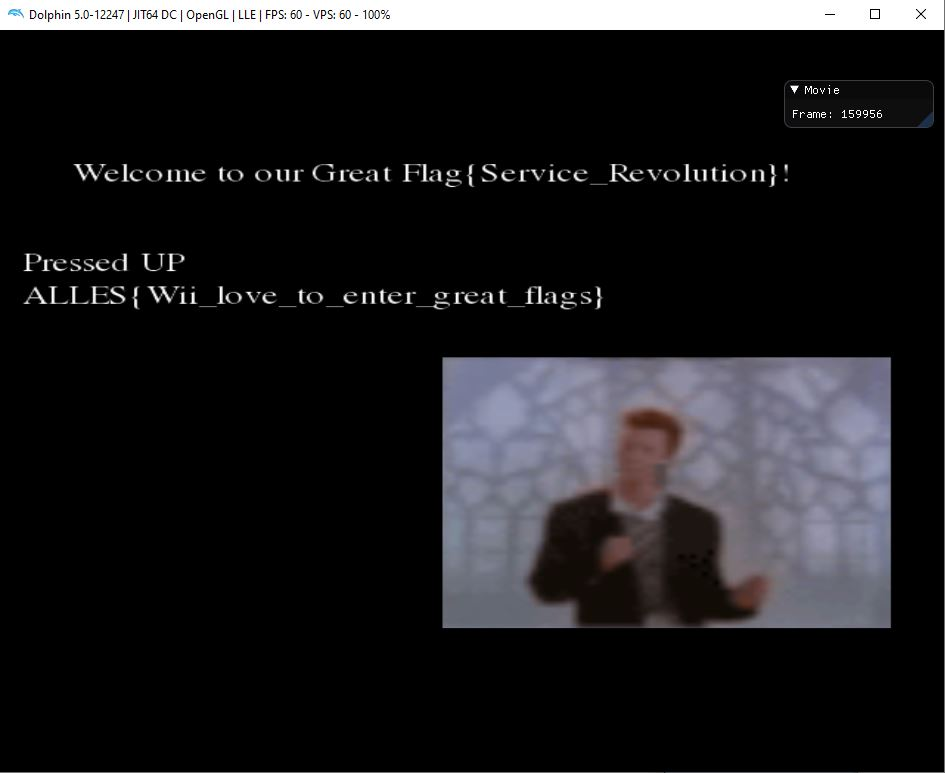

[Rev] Flag Service Revolution
7 September 2020
Team : HATS Singapore
Challenge File[s] : boot.dol
Description
Flag Service Revolution
Category: Reverse Engineering
Difficulty: Medium
Author: TheVamp, 0x4d5a
First Blood: LSE
Welcome to our great Flag{Service_Revolution}
Challenge Files:flag_service_revolution.7z
Feedback: Did you like the challenge? Thoughts? Give feedback here
What The File?
In this file, we are presented with mainly the boot.dol file. After a quick search on Google, we found this link.
DOL file extension - Nintendo GameCube executable.
It also says that we can use Dolphin to work with *.dol files.
DOLphin Emulator
We then download the Dolphin emulator version 5 from https://dolphin-emu.org/download/. Next, click on File -> Open... and select the boot.dol file.

Also, click on the Controllers icon. Make sure that the Wii Remote 1 is an Emulated Wii Remote. Click on configure to choose the choice of device, buttons and D-Pad. Once that is done, we can test our key input with the loaded game.

Note that there is also debugger built into the Dolphin Emulator though it is not really necessary.
Converting the Dol file to ELF
Throwing the dol file straight into Ghidra did not work. After a search dol file in ghidra, the first result points us to this link.
Gamecube executables are typically in a DOL format. While this can, in theory be analyzed, it�s much easier for Ghidra (and other tools) to analyze an ELF-format file.
To do this, we can use a tool aptly called DolTool. We will need to download the DolTool x0.3 - TenOfTen(LINUX) and compile it ourselves. Thankfully all it takes is g++ -o ./doltool *cpp and it should be compiled in no time.
Next run the following command.
$ ./doltool -e boot.dol
DolTool v0.3 - loser 2003
Converted boot.dol to to boot.elf
$ file boot.elf
boot.elf: ELF 32-bit MSB executable, PowerPC or cisco 4500, version 1 (SYSV), statically linked, stripped
This ELF should be recognizable by Ghidra.
Ghidra'ing boot.elf
The approach here is to do a strings to look for the No flag yet.... One of the functions referencing this string is FUN_8003d4c4(void).
The decompilation is as follows
void FUN_8003d4c4(void)
{
...
<REDACTED>
...
local_44 = DAT_803900a8;
local_54 = s_Great_803900a0._4_2_;
local_50 = DAT_803900ac;
local_74 = s_{Service_Revolution}!_803900b4._4_4_;
local_70 = s_{Service_Revolution}!_803900b4._8_4_;
local_42 = DAT_803900aa;
local_4c = DAT_803900b0;
local_58 = s_Great_803900a0._0_4_;
local_78 = s_{Service_Revolution}!_803900b4._0_4_;
local_6c = s_{Service_Revolution}!_803900b4._12_4_;
local_68 = s_{Service_Revolution}!_803900b4._16_4_;
local_64 = s_{Service_Revolution}!_803900b4._20_2_;
local_60 = s_Welcome_80390098._0_4_;
local_5c = s_Welcome_80390098._4_4_;
local_48 = 0x6f757200;
local_120 = s_No_buttons_pressed_yet_..._800a7fc0._12_4_;
local_11c = s_No_buttons_pressed_yet_..._800a7fc0._16_4_;
local_118 = s_No_buttons_pressed_yet_..._800a7fc0._20_4_;
local_114 = s_No_buttons_pressed_yet_..._800a7fc0._24_2_;
local_112 = s_No_buttons_pressed_yet_..._800a7fc0[26];
no_flag_yet_Str = s_No_flag_yet_..._800a7ff4._0_4_;
local_de = 0x111;
string_key_pressed = s_No_buttons_pressed_yet_..._800a7fc0._0_4_;
local_128 = s_No_buttons_pressed_yet_..._800a7fc0._4_4_;
local_124 = s_No_buttons_pressed_yet_..._800a7fc0._8_4_;
local_15c = s_No_flag_yet_..._800a7ff4._4_4_;
local_158 = s_No_flag_yet_..._800a7ff4._8_4_;
local_154 = s_No_flag_yet_..._800a7ff4._12_4_;
local_fb = 0;
local_111 = 0;
local_10d = 0;
local_109 = 0;
local_105 = 0;
local_101 = 0;
local_fd = 0;
FUN_800971b4(auStack336,0,0x22);
sequence = FUN_8003ebc4(auStack200,auStack404,PNG_801aa8e0,300,200);
if (sequence == 0) {
return;
}
iVar3 = 0xf;
FLAG = &no_flag_yet_Str;
sequence = 0;
FUN_80040594(auStack404,0x4c,0x3e);
iVar2 = 0;
iVar4 = 0x14;
FUN_800406e4((double)DAT_803900cc,auStack404);
local_16a = 0;
FUN_8003eb1c();
do {
iVar1 = FUN_8003eb74();
if (iVar1 == 0) {
FUN_8003eba0(&DAT_801d8f20,0x1b70d8);
}
/* doesnt enter here
*/
if (DAT_8044b998 != 0) {
FUN_8003eb54();
FUN_80041db0(auStack200);
FUN_80040458();
}
FUN_800568f4();
if (DAT_8044b958 == 0) {
/* enters here
*/
iVar4 = iVar4 + ((uint)(DAT_8044b954 == 0) - 1);
if (DAT_8044b950 == 0) goto LAB_8003d84c;
LAB_8003d74c:
iVar3 = iVar3 + 1;
}
else {
iVar4 = iVar4 + 1;
if (DAT_8044b950 != 0) goto LAB_8003d74c;
LAB_8003d84c:
/* comes here */
iVar3 = iVar3 + ((uint)(DAT_8044b94c == 0) - 1);
}
FUN_800993ec(auStack504,s_%s_%s_%s_%s_%s%s_80390084,&local_60,&local_44,&local_48,&local_58,
&local_50,&local_78);
FUN_80040fd8(displayString,iVar4,iVar3,auStack504);
key_code = get_keypress_FUN_800569b0(0);
if (key_code != 0) {
keypress_Strings_FUN_8003d2d4(key_code,(char *)&string_key_pressed);
if (sequence == 9) {
if ((key_code & 0x800) != 0) {
FLAG = (undefined4 *)&local_a0;
local_8e = local_5c._2_1_;
local_90 = local_6c._0_1_;
}
LAB_8003d8e4:
if (sequence == 0) {
LAB_8003d8ec:
sequence = 0;
if ((key_code & 8) != 0) {
sequence = 1;
local_80 = (char)local_58;
local_7e = local_78._1_1_ + ' ';
local_81 = local_60._2_1_;
local_a0 = (char)local_58 + -0x20;
local_83 = local_70._0_1_;
}
}
}
else {
if (sequence == 8) {
if ((key_code & 0x800) == 0) goto LAB_8003d8ec;
local_93 = local_58._2_1_;
sequence = 9;
local_98 = local_68._0_1_;
}
else {
if (sequence == 7) {
if ((key_code & 0x400) == 0) goto LAB_8003d8ec;
sequence = 8;
local_85 = (char)local_58;
local_82 = local_50._0_1_ + ' ';
local_92 = local_70._0_1_;
local_8d = local_68._2_1_;
}
else {
if (sequence == 6) {
if ((key_code & 0x400) == 0) goto LAB_8003d8ec;
sequence = 7;
local_7d = (undefined)local_68;
local_9f = local_50._1_1_ + -0x20;
local_9c = local_78._1_1_;
local_95 = (undefined)local_44;
}
else {
if (sequence == 5) {
if ((key_code & 0x100) == 0) goto LAB_8003d8ec;
sequence = 6;
local_7f = (undefined)local_50;
local_9d = (char)local_74 + -0x20;
local_7c = 0;
local_91 = local_54._0_1_;
}
else {
if (sequence == 4) {
if ((key_code & 0x200) == 0) goto LAB_8003d8ec;
sequence = 5;
local_96 = local_50._1_1_;
local_88 = local_58._0_1_ + ' ';
local_8b = local_60._1_1_;
local_97 = local_70._0_1_;
}
else {
if (sequence == 3) {
if ((key_code & 0x100) == 0) goto LAB_8003d8ec;
local_8a = local_58._1_1_;
sequence = 4;
local_8f = local_70._0_1_;
local_9b = local_78._0_1_;
local_89 = local_8f;
}
else {
if (sequence == 2) {
if ((key_code & 0x200) == 0) goto LAB_8003d8ec;
sequence = 3;
local_94 = (undefined)local_70;
local_87 = local_70._1_1_ + ' ';
local_86 = (char)local_74;
local_99 = local_74._1_1_;
}
else {
if (sequence != 1) goto LAB_8003d8e4;
if ((key_code & 4) == 0) goto LAB_8003d8ec;
sequence = 2;
local_84 = local_44._0_1_;
local_9e = local_6c._1_1_ + -0x20;
local_8c = (undefined)local_6c;
local_9a = local_60._0_1_;
}
}
}
}
}
}
}
}
}
iVar2 = iVar2 + 1;
key_code = (uint)local_16a;
if ((uint)(iVar2 * -0x33333333) < 0x33333334) {
key_code = key_code + 1 & 0xffff;
if (key_code == 0x1b) {
key_code = 0;
local_16a = 0;
}
else {
local_16a = (ushort)key_code;
}
}
FUN_80040630(auStack404,(int)local_18c,(int)local_18a,key_code);
FUN_80040fd8(displayString,0xf,100,&string_key_pressed);
FUN_80040fd8(displayString,0xf,0x82,FLAG);
FUN_80040270();
} while( true );
}
What this essentially is doing is to store the strings that we see in the running program like No buttons pressed yet ... and No flag yet .... These will be printed out onto the screen first. In the game loop, it would check for keypresses in which it would also return some sort of keycode based on the buttons pressed which will allow the right strings to be printed.
It detects keypressed based on bitmasking. In summary, these are the bitmasking for each of the buttons.
BITMASK = KEY PRESS
0x8 = A press
0x4 = B press
0x800 = up press
0x400 = down press
0x100 = left press
0x200 = right press
0x1000 = + press
0x10 = - press
0x1 = 1 press
0x2 = 2 press
Click here to see the decompilation of keypress_Strings_FUN_8003d2d4
void keypress_Strings_FUN_8003d2d4(uint key_code,char *pressed_key)
{
undefined4 uVar1;
undefined2 uVar2;
char cVar3;
undefined4 uVar4;
uVar2 = s_UUUUUUUUUUUUUUUUUUUUUUUUUUUUUUUU_8038ffbc._68_2_;
uVar1 = s_UUUUUUUUUUUUUUUUUUUUUUUUUUUUUUUU_8038ffbc._64_4_;
if ((key_code & 8) != 0) {
*(undefined4 *)pressed_key = s_UUUUUUUUUUUUUUUUUUUUUUUUUUUUUUUU_8038ffbc._60_4_;
*(undefined4 *)(pressed_key + 4) = uVar1;
*(undefined2 *)(pressed_key + 8) = uVar2;
}
uVar2 = s_Pressed_B_80390004._8_2_;
uVar1 = s_Pressed_B_80390004._4_4_;
if ((key_code & 4) != 0) {
*(undefined4 *)pressed_key = s_Pressed_B_80390004._0_4_;
*(undefined4 *)(pressed_key + 4) = uVar1;
*(undefined2 *)(pressed_key + 8) = uVar2;
}
cVar3 = s_Pressed_UP_80390010[10];
uVar2 = s_Pressed_UP_80390010._8_2_;
uVar1 = s_Pressed_UP_80390010._4_4_;
if ((key_code & 0x800) != 0) {
*(undefined4 *)pressed_key = s_Pressed_UP_80390010._0_4_;
*(undefined4 *)(pressed_key + 4) = uVar1;
*(undefined2 *)(pressed_key + 8) = uVar2;
pressed_key[10] = cVar3;
}
cVar3 = s_Pressed_DOWN_8039001c[12];
uVar4 = s_Pressed_DOWN_8039001c._8_4_;
uVar1 = s_Pressed_DOWN_8039001c._4_4_;
if ((key_code & 0x400) != 0) {
*(undefined4 *)pressed_key = s_Pressed_DOWN_8039001c._0_4_;
*(undefined4 *)(pressed_key + 4) = uVar1;
*(undefined4 *)(pressed_key + 8) = uVar4;
pressed_key[0xc] = cVar3;
}
cVar3 = s_Pressed_LEFT_8039002c[12];
uVar4 = s_Pressed_LEFT_8039002c._8_4_;
uVar1 = s_Pressed_LEFT_8039002c._4_4_;
if ((key_code & 0x100) != 0) {
*(undefined4 *)pressed_key = s_Pressed_LEFT_8039002c._0_4_;
*(undefined4 *)(pressed_key + 4) = uVar1;
*(undefined4 *)(pressed_key + 8) = uVar4;
pressed_key[0xc] = cVar3;
}
uVar2 = s_Pressed_RIGHT_8039003c._12_2_;
uVar4 = s_Pressed_RIGHT_8039003c._8_4_;
uVar1 = s_Pressed_RIGHT_8039003c._4_4_;
if ((key_code & 0x200) != 0) {
*(undefined4 *)pressed_key = s_Pressed_RIGHT_8039003c._0_4_;
*(undefined4 *)(pressed_key + 4) = uVar1;
*(undefined4 *)(pressed_key + 8) = uVar4;
*(undefined2 *)(pressed_key + 0xc) = uVar2;
}
cVar3 = s_Pressed_PLUS_8039004c[12];
uVar4 = s_Pressed_PLUS_8039004c._8_4_;
uVar1 = s_Pressed_PLUS_8039004c._4_4_;
if ((key_code & 0x1000) != 0) {
*(undefined4 *)pressed_key = s_Pressed_PLUS_8039004c._0_4_;
*(undefined4 *)(pressed_key + 4) = uVar1;
*(undefined4 *)(pressed_key + 8) = uVar4;
pressed_key[0xc] = cVar3;
}
uVar2 = s_Pressed_MINUS_8039005c._12_2_;
uVar4 = s_Pressed_MINUS_8039005c._8_4_;
uVar1 = s_Pressed_MINUS_8039005c._4_4_;
if ((key_code & 0x10) != 0) {
*(undefined4 *)pressed_key = s_Pressed_MINUS_8039005c._0_4_;
*(undefined4 *)(pressed_key + 4) = uVar1;
*(undefined4 *)(pressed_key + 8) = uVar4;
*(undefined2 *)(pressed_key + 0xc) = uVar2;
}
uVar2 = s_Pressed_1_8039006c._8_2_;
uVar1 = s_Pressed_1_8039006c._4_4_;
if ((key_code & 2) == 0) {
if ((key_code & 1) == 0) {
return;
}
}
else {
*(undefined4 *)pressed_key = s_Pressed_1_8039006c._0_4_;
*(undefined2 *)(pressed_key + 8) = uVar2;
*(undefined4 *)(pressed_key + 4) = uVar1;
if ((key_code & 1) == 0) {
return;
}
}
uVar2 = s_Pressed_2_80390078._8_2_;
uVar1 = s_Pressed_2_80390078._4_4_;
*(undefined4 *)pressed_key = s_Pressed_2_80390078._0_4_;
*(undefined4 *)(pressed_key + 4) = uVar1;
*(undefined2 *)(pressed_key + 8) = uVar2;
return;
}
Getting the flag
When tracing what gets printed onto the screen, we suspect heavily that the flag would be printed when the sequence of key presses are correct. We also suspect that the flag gets printed in the space of No flag yet .... Tracking that ,), we see another usage of that variable, (refactored as FLAG , in one place which is "sequence" 9.
All we need to do is to move from sequence to sequence.
...
...
if (sequence == 9) {
if ((key_code & 0x800) != 0) {
FLAG = (undefined4 *)&local_a0; // <- REACH HERE
local_8e = local_5c._2_1_;
local_90 = local_6c._0_1_;
}
LAB_8003d8e4:
if (sequence == 0) {
LAB_8003d8ec:
sequence = 0;
if ((key_code & 8) != 0) { // <-- A PRESS
sequence = 1;
local_80 = (char)local_58;
local_7e = local_78._1_1_ + ' ';
local_81 = local_60._2_1_;
local_a0 = (char)local_58 + -0x20;
local_83 = local_70._0_1_;
}
}
}
else {
if (sequence == 8) {
if ((key_code & 0x800) == 0) goto LAB_8003d8ec; // <-- UP PRESS
local_93 = local_58._2_1_;
sequence = 9;
local_98 = local_68._0_1_;
...
...
// Continue on and chain them up from sequence 0 to 9
After the quick trace, we see that we are supposed to press <A><B><RIGHT><LEFT><RIGHT><LEFT><DOWN><DOWN><UP><UP>
Trying that on the program and we flagged!
